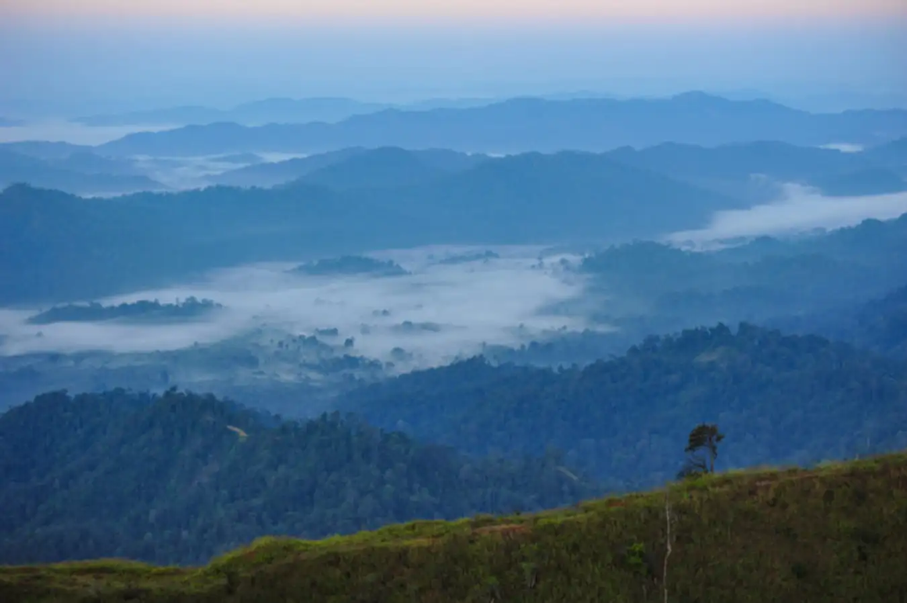

1.ภูชี้ฟ้า เชียงราย

คงไม่มีใครไม่รู้จักสถานที่ดูทะเลหมอกยอดฮิตอย่างภูชี้ฟ้า ชะง่อนหินที่ยื่นออกไปจากหน้าผาเป็นแลนด์มาร์คสำคัญที่ทำให้ทุกคนที่ได้เห็นต้องรู้อย่างแน่นอนว่าเป็นที่ไหน ด้วยความสูงจากระดับน้ำทะเลปานกลาง 1,200 - 1,600 เมตร ทำให้มองเห็นทะเลหมอกได้ไกลสุดลูกหูลูกตาเป็นอีกที่ที่จะทำให้คุณพบเจอกับประสบการณ์สุดฟิน
2. ดอยหลวง เชียงดาว เชียงใหม่

สถานที่ดูทะเลหมอก ตั้งเต๊นท์ จิบกาแฟชิลๆ ไปกับบรรยากาศของยอดเขาความสูง 2,225 เมตรจากระดับน้ำทะเลปานกลางแต่แนะนำสำหรับคนที่มีแรงปีนเขาได้แบบไม่ลำบากเพราะทางขึ้นดอยหลวงต้องเดิน เดิน และเดินเท่านั้น ดอยหลวงจะเปิดให้เข้าเฉพาะช่วงหน้าหนาวควรรีเช็คข้อมูลให้ดี แต่วิวท้องฟ้าตอนกลางคืนและทะเลหมอกในช่วงเช้านั้นรับรองว่าสวยประทับใจจนคุณไม่รู้ลืม
3. กิ่วแม่ปาน อุทยานแห่งชาติดอยอินทนนท์ จังหวัดเชียงใหม่
สถานที่ถ่ายรูปและดูทะเลหมอกยอดฮิตใครที่เคยเห็นรูปวิวท้องฟ้า สูงจากระดับน้ำทะเลปานกลาง 2,000 เมตร นอกจากจะได้เห็นทะเลหมอกแล้วยังมีสถานที่ท่องเที่ยวบนดอยอินทนนท์ให้แวะตลอดทั้งทางไม่ว่าจะเป็นน้ำตก เส้นทางเดินป่า เอาใจสายธรรมชาติกันสุดๆ
4. ดอยอ่างขาง จังหวัดเชียงใหม่
เป็นสถานีวิจัยการเกษตรที่ตั้งอยู่บนเทือกเขาตะนาวศรี สูงจากระดับน้ำทะเล 1,928 เมตร มีพื้นที่ให้ชมทะเลหมอกหลายจุด และมีอากาศหนาวเย็นตลอดทั้งปี นอกจากจะมีทะเลหมอกให้เที่ยวแล้วยังมีสถานที่ท่องเที่ยวเชิงเกษตรให้อีกหลายจุดให้เที่ยวชมอย่างจุใจ เหมาะสำหรับใครที่หาโลเคชั่นถ่ายรูปที่หลากหลายสวยถูกใจแน่นอน
5. ภูทับเบิก จังหวัดเพชรบูรณ์
ถือเป็นอีกฟนึ่งสถานที่ท่องเที่ยวขึ้นชื่อของจังหวัดเพชรบูรณ์ เป็นยอดเขาที่สูงที่สุดในจังหวัดทำให้ได้รับความนิยมเป็นอย่างมาก นอกจากจะได้ชมความงามของทะเลหมอกแล้ว รอบๆ ภูทับเบิกก็มีคาร์เฟ่ ร้านอาหาร โรงแรมให้แวะเที่ยวได้ตลอดทางอิ่มหนำสำราญทั้งทริปแน่นอน6. ห้วยน้ำดัง จังหวัดเชียงใหม่
อีกสถานที่หนึ่งในจังหวัดเชียงใหม่ที่ขึ้นชื่อ ใครที่อยากสัมผัสอากาศหนาว วิวสวย ๆ สามารถดูทะเลหมอกได้แบบพาโนรามาเราแนะนำที่นี่เลย นอกจากจะมีทะเลหมอกให้ชมแล้วยังมีสวนกาแฟแวะให้เที่ยว ทัศนียภาพจากห้วยน้ำดังจะสามารถมองเห็นดอยหลวงเชียงดาวยาวสุดลูกหูลูกตาน่าถ่ายรูปมากๆ วิวเต็มสิบให้ล้านเลย
7. ดอยเสมอดาว จังหวัดน่าน
จุดชมวิวที่สวยงามที่สุดแห่งหนึ่งของจังหวัดที่รายล้อมไปด้วยขุนเขาอย่างจังหวัดน่าน มีจุดให้ชมทั้งทะเลหมอก พระอาทิตย์ขึ้นพระอาทิตย์ตกอากาศเย็นสบายรายล้อมไปด้วยธรรมชาติ เปิดให้เข้าชมได้ตลอดทั้งปี แต่ในช่วงฤดูหนาวผู้คนก็หนาตา สำหรับคนที่ชอบความสดชื่นเย็นสบายไปเที่ยวฤดูฝนก็ยังโอเค ที่สำคัญยังมีมุมให้ถ่ายรูปเยอะมากๆ ทั้งลานดูดาว หรือเนินเขาที่ตัดกับขอบฟ้าถูกใจสายช่างภาพแน่นอน8. ดอยแม่ระเมิง จังหวัดตาก

จุดชมวิวทะเลหมอกที่สวยที่สุดอยู่ที่ม่อนกิ่วลม สามารถมองเห็นวิวได้ 180 องศา ไม่จุดชมวิวแต่ทั้งดอยแม่ระเมิงเองก็มีสถานที่ท่องเที่ยงเชิงธรรมชาติอีกหลายจุด ทั้งน้ำตกชาวดอยที่ให้แวะเล่นก่อนที่จะไปสัมผัสบรรยากาศและความสวยงามของทะเลหมอกบนกิ่วแม่ลม
9. ดอยอ่างขาง จังหวัดเชียงใหม่
ยังอยู่กันที่จังหวัดน่านเพราะความเป็นเมืองแห่งขุนเขาไม่แปลกที่จะมีจุดให้ชมทะเลหมอกได้อย่างหลากหลาย ดอยผาชู้ตั้งอยู่บนพื้นที่อุทยานแห่งชาติศรีน่าน บนดอยมีพื้นที่สำหรับกางเต๊นท์และบ้านพักให้บริการ ทำให้คุณสามารถตื่นมาดูวิวทะเลหมอกยามเช้า ดื่มด่ำกับการมองเพราะอาทิตย์ขึ้น สัมผัสกับอากาศหนาวบนยอดดอย ใครที่ไปกับแฟนต้องฟินกันสุด ๆ10. ดอยอ่างขาง จังหวัดเชียงใหม่

ตั้งอยู่บนพื้นที่อุทยานแห่งชาติทองผาภูมิ เป็นจุดชมทะเลหมอกที่งดงามอีกแห่งหนึ่งของประเทศไทย โดยเป็นจุดที่สามารถมองเห็นทิวเขาในฝั่งประเทศพม่า บรรยากาศเย็นสบาย อีกหนึ่งไฮไลต์ของที่นี่คือวันไหนที่ฟ้าเปิดจะสามารถมองเห็นทะเลอันดามันฝั่งพม่าได้อีกด้วยเรียกได้ว่าเห็นได้ทั้งทะเลและภูเขาในที่เดียวเลย